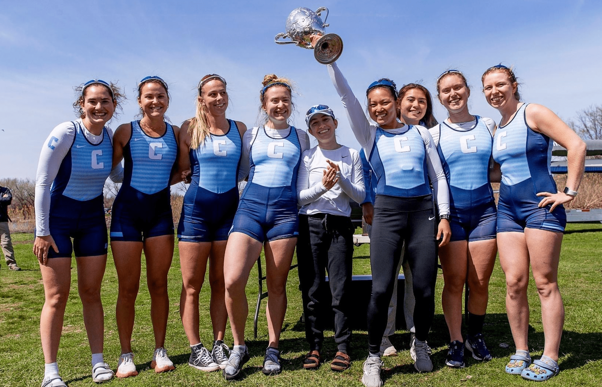
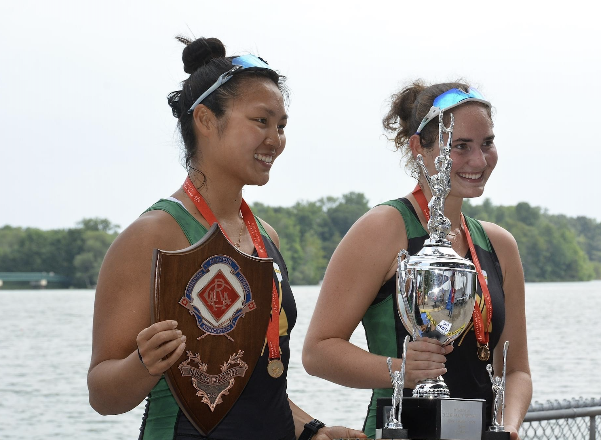
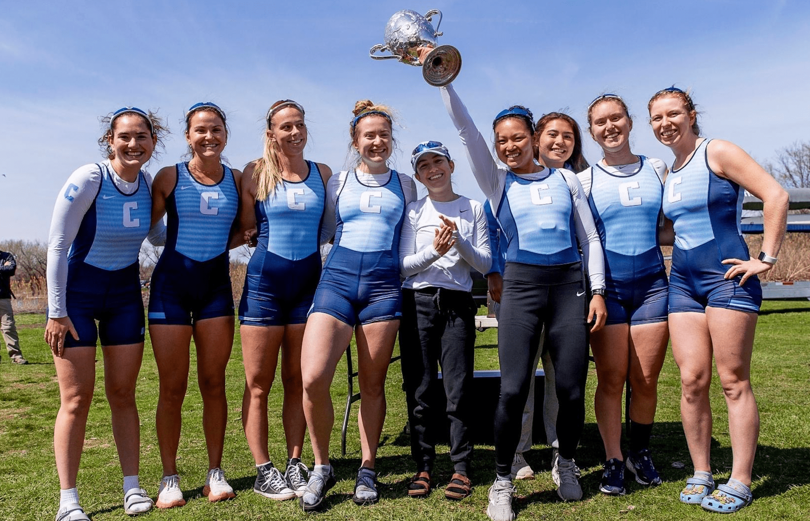
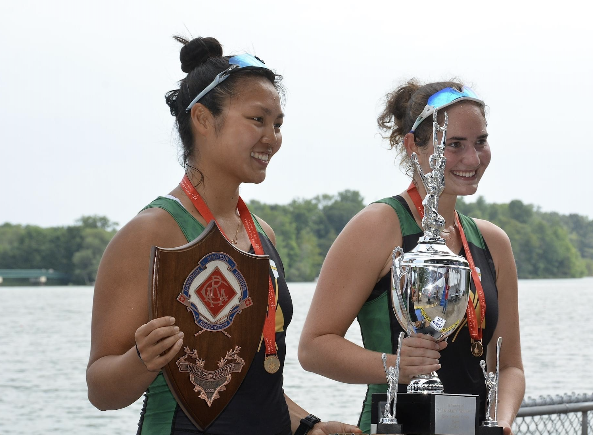

Hi! My name is Elisa. I am a second-year PhD student at UC San Diego in the CSE department advised by Stefan Savage and Geoff Voelker.
Broadly, I do research pertaining to empirical measurements of security and privacy related topics. Recently, I've worked on projects related to web scraping and copyright issues, online privacy, and enterprise security.
Outside of research, I race bikes semi-professionally. When I was an undergrad at Columbia, I was also a Division 1 rower.
Contact me: e4luo (at) ucsd (dot) edu
Publications
[IMC '25] "Canvassing the Fingerprinters: Characterizing Canvas Fingerprinting Use Across the Web".
Elisa Luo, Tom Ritter, Geoff Voelker, Stefan Savage.
ACM Internet Measurement Conference (IMC) 2025. (To Appear)
[IMC '25] "Somesite I Used To Crawl: Awareness, Agency and Efficacy in Protecting Content Creators From AI Crawlers".
Enze Liu*, Elisa Luo*, Shawn Shan, Geoffrey M. Voelker, Ben Y. Zhao, Stefan Savage
(*Equal contribution).
ACM Internet Measurement Conference (IMC) 2025. (To Appear)
[S&P '25] "Understanding the Efficacy of Security Training in Practice".
Grant Ho, Ariana Mirian, Elisa Luo, Khang Tong, Euyhyun Lee, Lin Liu, Christopher A. Longhurst, Christian Dameff, Stefan Savage, and Geoffrey M. Voelker.
IEEE Symposium on Security and Privacy, 2025.
[PAM '25] "Characterizing the Networks Sending Enterprise Phishing Emails".
Elisa Luo, Liane Young, Grant Ho, M. H. Afifi, Marco Schweighauser, Ethan Katz-Bassett & Asaf Cidon.
Passive and Active Measurement Conference, 2025.
Preprints
[Under Submission] "Count of Monte Crypto: Accounting-based Defenses for Cross-Chain Bridges".
Enze Liu, Elisa Luo, Jian Chen Yan, Katherine Izhikevich, Stewart Grant, Deian Stefan, Geoffrey M Voelker, Stefan Savage.
Available: arxiv.org/pdf/2410.01107
Education
I earned my Bachelor's of Science (in Computer Science) from Columbia University, where I was fortunate enough to be advised by Asaf Cidon and Ethan Katz-Bassett.
News
August 2025: 🎉 2 for 1 special! Our paper on Canvas Fingerprinting was also accepted to IMC 2025!
March 2025: Our paper, "Somesite I Used To Crawl: Awareness, Agency and Efficacy in Protecting Content Creators From AI Crawlers", was accepted to IMC 2025!
November 2024: Our paper, "Characterizing the Networks Sending Enterprise Phishing Emails", was accepted into PAM 2025!
September 2024: Our paper, "Understanding the Efficacy of Security Training in Practice", was accepted into Oakland (S&P) 2025!
September 2023: I started my PhD at UCSD!
May 2023: I graduated Magna Cum Laude from Columbia Engineering!
Awards
All-Ivy First Team. Ivy League Rowing Championships, Worcester, MA. May 2023.
School of Engineering and Applied Science Scholar Athlete Award. Fu Foundation School of Engineering and Applied Science, Columbia University. May 2023.
Photo Gallery
 


